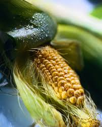
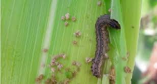
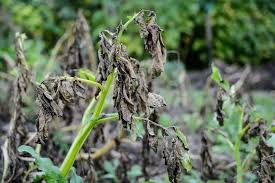
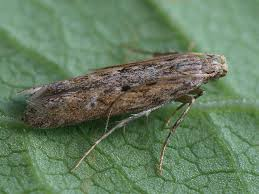
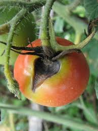
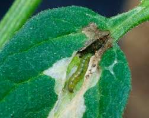
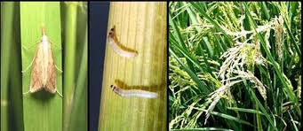
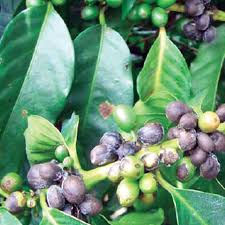
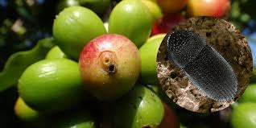
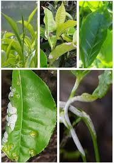

🌾 Crop Diseases & Pests Information
🌽 Maize
Disease: Maize Lethal Necrosis (MLN)
Definition: A viral disease that causes severe yield loss in maize.
Symptoms: Yellow streaks, drying leaves, stunted growth.
Control: Use certified seeds, crop rotation, remove infected plants.
Pesticides: Imidacloprid, Lambda-cyhalothrin (to control vectors).
Pest: Fall Armyworm
Symptoms: Holes in leaves, damaged cobs.
Control: Early scouting, neem spray.
Pesticides: Spinosad, Emamectin benzoate.
🫘 Beans
Disease: Bean Rust
Definition: A fungal disease causing rust-like leaf spots.
Symptoms: Brown powdery spots, leaf drop.
Control: Resistant varieties, proper spacing.
Fungicides: Mancozeb, Propiconazole.

Pest: Bean Aphids
Symptoms: Curled leaves, sticky honeydew.
Control: Neem spray, natural predators.
Pesticides: Imidacloprid.

🥔 Potato
Disease: Late Blight
Definition: A fast-spreading fungal disease in wet conditions.
Symptoms: Dark leaf spots, tuber rot.
Control: Crop rotation, avoid overhead irrigation.
Fungicides: Mancozeb, Metalaxyl.
Pest: Potato Tuber Moth
Symptoms: Holes in tubers.
Control: Proper storage.
Pesticides: Cypermethrin.
🍅 Tomato
Disease: Early Blight
Symptoms: Brown spots with rings.
Fungicides: Mancozeb, Chlorothalonil.
Pest: Tomato Leaf Miner
Symptoms: Leaf tunnels, fruit damage.
Pesticides: Spinosad, Abamectin.
🌾 Rice
Disease: Rice Blast
Symptoms: Diamond-shaped leaf spots.
Fungicides: Tricyclazole.

Pest: Rice Stem Borer
Symptoms: Dead heart, empty grains.
Pesticides: Chlorantraniliprole.
☕ Coffee
Disease: Coffee Berry Disease
Symptoms: Dark sunken spots on berries.
Fungicides: Copper-based fungicides.
Pest: Coffee Berry Borer
Symptoms: Holes in berries.
Pesticides: Imidacloprid.
🍃 Tea
Disease: Tea Blister Blight
Symptoms: White blister spots.
Fungicides: Copper fungicides.
Pest: Tea Mosquito Bug
Symptoms: Brown patches on leaves.
Pesticides: Lambda-cyhalothrin.